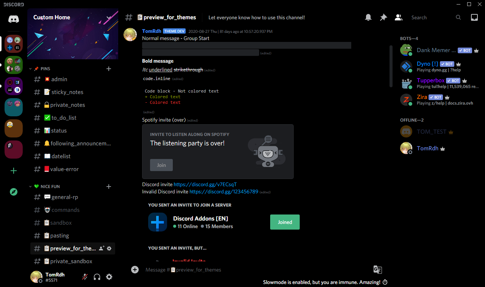
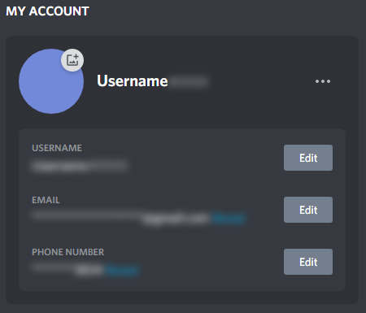
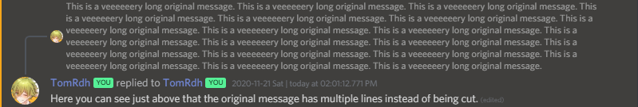

Here you can access to all themes previews and download links, click to an image to resize it. Here (only in this page), Blue titles means that's a theme. Green titles means that's a minitheme. To download and install a theme on Discord, follow this tutorial.
Downloading from GitHub means you can apply them with all BetterDiscord, Powercord and Stylus! If you're using BetterDiscord, you should check the official download links.
Opera GX Gaming Theme (OFFICIAL!)
WARNING: The best theme I made ever!!! A gaming theme inspired by Opera GX supporting both default themes and a maximum amount of official plugins. Also supports some other Discord pages like login screen and Discord Developer Portal on browser.
Do you know the hidden AMOLED dark theme on Android with the full black background? Just click 10 times on "Dark theme" in your appearance settings! But you want this theme on PC but it's unavailable? Great news, now it's available! You can download this theme and enjoy using the AMOLED dark theme on PC!
Preview: ADT:299
AMOLED Dark Theme Optimized
This Optimized version of AMOLED Dark Theme changes all backgrounds to full dark.
 Preview: ADTO:199
Always Display Channel Buttons
Allows you to see what buttons you have for each channel without hovering on it. Useful to test some channel settings.
Preview: ADCB:5
Blur Account Informations
This mini-theme allows you to hide your email adress and other things in your Account Card when you enter in Discord's User Settings without enabling Streamer Mode. This theme has also some settings in the theme file. Similar theme: YouTube Blur Emails.
 Preview: BAI:1 with new account infos
Compact Channels and MemberList
Compact Channellist and Memberlist. This is a customizable theme, you can change some variables in the theme file.
Preview: CC:10 - Compact memberlist in beta
ContextMenus Old Style
You don't like the new Discord update that changed background colors when you hover on an option in a contextmenu? This theme allows you to go back to the old contextmenus update. This doesn't break any plugin, it changes only some colors just for appearance.
Theme Thumbnail from YTGamer/bdthemes (CMOS:3)
Custom Font
Allows you to change the font used in all your Discord interface and the font for codelines/codeblocks. Similar theme: Custom Font for Browser.
Preview: CF:8
Green SpotifyControls
Allows you to easily change all colors and background colors for the SpotifyControls plugin. Change the colors in the theme file.
Preview: GSC:1
Remove Nitro Tab
Hides the Nitro channel in private channels list, but you can use Alt + Up/Down Arrows shortcuts (for Windows) to access to it.
Preview: RNT:1 - Image from YTGamer/bdthemes
Serverlist At Bottom
Moves the serverlist at the bottom, like Guilded. Supports ONLY with these themes:
✅ One of my fullthemes or my minithemes
✅ A theme optimized with ServerlistAtBottom
✅ A theme that has only color properties or at least doesn't move elements.
✅ Or the native Discord light and dark themes
Preview: SAB:9
Show full original message in Replies
Allows you to directly show the full original message in long inline replies.
 Preview: SFOMIR:1
Textarea Max Height Modifier
Are you bored with the small space that Discord allows in textareas when you're writing long messages? This customizable theme allows you to modify the max height. You'll have more text shown in your textarea!
Preview: TMHM:2
Typing At Top Of Chat Box (chatbox = textarea)
Moves the "Someone is typing…" and some other things at the top of the textarea. Just like on mobile!
Preview: TATOCB:2
UT00_AllUTilities
A bit complex to understand, but it allows you to highly customize some parts of your UI, and with some other settings.
Preview: UT00AU:7
Can't find a theme?
Try using these links! Maybe you'll appreciate the ones made by others, or some styles for other websites.
Something was updated?
If you're using one of the themes above, you can see the changelogs page. You can also check build numbers to see if your actual number is the same as the latest. If it's not the same, reload Discord using Ctrl + R!